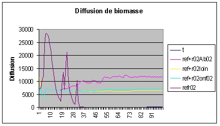

|
AlamoAgricultural Landscape ModellingA. Hofstetter, R. Lifran, Inra ; P. Bommel, Cirad ObjectifsLe but de ce modèle est de comprendre comment les politiques publiques, notamment agricoles et forestières, peuvent agir sur la transformation des paysages. Il s’agit plus précisément de caractériser la dynamique à long terme d’un système agro-sylvo-pastoral dans un contexte de mutation démographique, et d’évaluer à quel moment de sa dynamique les politiques publiques peuvent avoir le plus d’impact. Le contexte de la modélisation est celui des Grands Causses au Sud du Massif central, caractérisé par une forte dépopulation et une progression de la forêt et des broussailles. Depuis quarante ans cette zone a été l’objet de nombreuses recherches, et plusieurs modèles avec des objectifs différents ont déjà été réalisés. Certains d’entre eux sont présentés ici (Forpast, Saint-Georges, Mejan). Contexte et problématiqueLa perspective retenue dans ALAMO est celle de la résilience du système écologique et social. L’état initial du paysage, faiblement et inégalement boisé, caractéristique des paysages du Causse à la fin du XIX° siècle, constitue un équilibre instable, et tout déséquilibre introduit par un choc sur la population, ou sur la productivité du travail, lance un processus cumulatif de boisement et d’enfrichement, qu’il sera très difficile de contrer ultérieurement. Le système tend alors vers un équilibre plus stable, ou état absorbant, dominé globalement par les friches et les bois, et localement par un équilibre entre terres labourables et boisements. La transition écologique et paysagère, d’un côté, et la transition démographique d’un autre côté, sont évidemment en interaction, mais il n’est pas aisé de saisir les voies de cette interaction sans s’aider de la modélisation. En effet, la population consomme du bois pour ses besoins domestiques, et cela sur les parcelles les plus boisées, et sur les parcelles collectives. La diminution de population affecte donc la prélèvement global de biomasse de plusieurs manières, par abandon de l’exploitation de parcelles ou de hameaux entiers, d’une part, et par la modification des prélèvements par les animaux (l’effectif d’ovins étant globalement constant, c‘est donc la modification de la gestion du pâturage qui est en cause). C’est bien dans cette perspective longue qu’il convient d’inscrire l’étude de l’impact des politiques publiques, si l’on veut englober à la fois les dynamiques longues, les variables retardées, et les processus d’adaptation à moyen terme. Le modèleL’organisation spatiale du modèle SMALe modèle d’organisation spatiale qui sous-tend la dynamique du paysage comporte trois niveaux principaux : celui des parcelles, celui des lieux-dits, et celui du Causse dans son ensemble. Au niveau du lieu-dit, c’est un mode auréolaire d’organisation de l’espace qui prédomine, alors qu’au niveau du Causse dans son ensemble, c’est une organisation alvéolaire qui caractérise l’organisation du paysage, chaque lieu-dit ayant son organisation propre, et ne débordant que rarement sur ses voisins. Cette combinaison d’un mode auréolaire et d’un mode alvéolaire constitue un fait stylisé important pour nous aider à concevoir la dynamique du paysage, et la modéliser.
Les dynamiques et leurs interactionsLa végétation évolue sous l’influence de plusieurs processus : la croissance naturelle de la végétation, et sa diffusion à travers le paysage (processus de percolation), les prélèvements de biomasse effectués d’une part par les troupeaux, et d’autre part pour les besoins domestiques de chauffage et de construction, les plantations forestières, et les défriches. Quand la biomasse augmente sur une parcelle, sa partie ligneuse augmente aussi, interdisant ainsi progressivement le pâturage. La croissance de la biomasse peut être décomposée en croissance sur place et croissance provenant de la diffusion. A partir d’une distribution spatiale initiale dans les lieux-dits, nous avons fait l’hypothèse que la population pouvait être décomposée en une partie pérenne et une partie non pérenne, qui disparaît progressivement quand les individus arrivent à un âge donné. La population consomme du bois pour ses propres besoins, et de la biomasse pour les besoins des troupeaux. La typologie des élevages élaborée par les agronomes de l’équipe nous a permis d’affecter à chaque éleveur un coefficient d’impact sur la végétation. La dynamique de la population implique des mécanismes d’adaptation et de réallocation des ressources. Nous avons utilisé pour ça un « marché des moutons » qui réalloue à chaque étape les animaux selon l’équilibre besoins/disponibilités de chaque éleveur ; et un processus de réallocation des terres, géré au niveau de chaque lieu-dit. Initialisation et couplage avec le SIGDeux raisons nous ont conduits à choisir une grille spatiale irrégulière, en fait le fond cadastral des communes de la zone d’étude : la première est liée à l’importance du travail empirique préalable sur la propriété et ses transformations, et la seconde est la contrainte de communication des résultats aux acteurs locaux. Par ailleurs, la modélisation du processus écologique de diffusion de la végétation implique l’utilisation d’un concept de voisinage physique, correspondant au rayon de dispersion des graines du pin sylvestre. Pour cela, nous avons utilisé les fonctionnalités du SIG, et importé les résultats dans le SMA.
Simulations et résultatsEn présence d’une grande complexité dans les dynamiques, nous avons choisi de tester dans un premier temps le comportement du modèle fondé sur des hypothèses générales très simples, appelées scénarios. Les résultats obtenus nous permettent d’ores et déjà de disposer de points de repères pour organiser des investigations plus fines, fondées sur la modélisation plus précise des comportements individuels. Il apparaît en particulier que la nature des dynamiques en cause, les conditions initiales et les paramètres du modèle imposent à la dynamique globale du paysage des trajectoires dont les politiques publiques ont du mal à s’affranchir. Plus précisément, il est clair que les dynamiques de population pèsent très lourd dans la définition de ces trajectoires. Ce résultat nous donne une indication forte pour la poursuite de la recherche, et met d’emblée l’accent sur l’importance des politiques d’aménagement du territoire.  Lifran, R., Editeur (2003). Politiques publiques et dynamiques de spaysages
au sud du Massif central. Montpellier, INRA , UMR LAMETA: 168. Pour en savoir plus, contactez l'auteur. |
|||||||